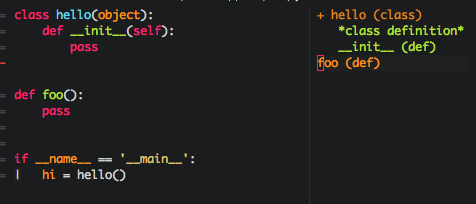

基础包
纯净的Emacs用起来是比较扎手的，可以把它看成一个裸的操作系统，而各种各样的插件（系统原生的或第三方的包）就是运行于其上的应用程序。emacs几十年还有人用就是因为它实际上提供了一个可编程的平台，而把扩展其功能的权力交给了程序员自己。
包的质量良莠不齐，但是有一些包还是非常强大的（一般同一个功能都有多个类似的包），甚至完全改变了emacs原本的操作方式。目前melpa上大概有4000多个包，认识这些包需要花费大量的时间，当然这也是一个熟悉emacs、学习提高的过程。
本章主要关注他们。
dired
dired，directory editor，很好很强大的一个emacs应用，它相当于MacOS的Finder。之前写过一篇博客：https://slegetank.github.io/blog/20170106-dired.html ，这里对于其基本操作不再赘述。
就像其名字说的，路径编辑器，强在编辑，而不是访问。因为它的原理是封装了ls，所以是平摊的，而不是树状的，这就使得其操作变得很强大，但是树状访问就很别扭。通过搜索打破目录间的限制、统一进行某些操作是dired最强大的功能。
而且可以把搜索的结果缓存成文件，如果需要操作的时候可以再直接将其读入，操作完成自动映射到实际的文件系统中。
为了提供树状访问功能，程序员们操碎了心。稍微搜了一下，就有如下一些包：
- neotree
A Emacs tree plugin like NerdTree for Vim. - ranger
在emacs上实现的命令行树形访问插件ranger：https://ranger.github.io/。 - project explorer
A project explorer sidebar. - treemacs
Treemacs is a file and project explorer similar to NeoTree or vim’s NerdTree, but largely inspired by the Project Explorer in Eclipse.
这个跟上面那个有点像。
tramp
tramp是个好东西，之前写过一篇博客：https://slegetank.github.io/blog/20170318-tramp.html ，它使得编辑远程文件的时候如同编辑本地文件有类似的体验，只在加载文件和保存文件时会与远程通讯，原理其实很简单，就是先缓存到本地，等编辑完成再发送到远程主机。
它支持多种远程访问协议（随着emacs版本更新一直在添加），find-file或者dired访问的是远程路径就会自动调用。配合bookmark可以做到一键访问，简单高效。
evil
曾经据说Vim跟emacs发生过“圣战”，就类似曾经听说过php跟python发生过圣战一样。但是了解多了却发现这也太不靠谱了。emacs和vim都追求纯键盘、无鼠标的编辑，且两个编辑器都属于任何环境中都可使用的编辑器，即使是纯命令行环境。vim的核心是一套非常高效的指法，以我个人观点看，在单文件编辑的时候效率远超emacs(最起码小指不会断)；而emacs的特性则是无与伦比的可扩展性；vim作为unix上标志性的编辑器，其存在符合unix的哲学，即“Write programs that do one thing and do it well.”；而emacs则认为自己就是Unix，它的每个mode应该“Do one thing and do it well.”。正因为如此，vim被称为编辑器之神，emacs被称为神之编辑器，我认为这是切中事实的。
而emacs的强大扩展性为vimer们提供了evil这个插件。这样，喜欢vim指法的用户就可以既使用evil指法，又享受emacs的强大扩展性了。emacs很为人诟病的就是它的快捷键往往以C-x或者C-c开头，这样在操作多的时候小指会断掉。vim的解决方案是提供了state的概念，即输入状态与命令状态分开，这样就多出来了一套快捷键而不需要前缀键的修饰。当然有人不喜欢这种设计，因人而异了，但是以我个人来看，单文件的操作vim指法要优于emacs。
evil-leader
evil-leader提供了leader键来代替原来的C-x这些前置键。默认是逗号，但由于spacemacs的影响，一般使用空格。例如，对于buffer相关的操作，可以做如下定义：
(evil-define-key 'normal global (kbd "bb") 'ivy-switch-buffer) (evil-define-key 'normal global (kbd "bk") 'kill-buffer)
b代表buffer，切换buffer是最常用的多文件操作，所以把它分配给bb；k代表kill，bk代表kill buffer。这样当需要操作的时候，只需要space-b-b就可以切换buffer了，比原生的C-x b好太多了。
ivy
ivy/helm是两个提升emacs选择输入时用户体验的包，地址分别是ivy，helm。其中ivy更新、效率更高；helm更老更慢但是更全。对于这两个包，二选一，必须装一个，因为它们会极大的提升平时选择的时候的补全效率。这里我选择ivy，因为更活跃。
ivy的github上有三个概念，分别是Ivy/Counsel/Swiper:
- Ivy
对于Emacs输入选择方式的解决方案。 - Counsel
使用Ivy包装的更方便的Emacs原生功能。 - Swiper
使用Ivy包装的isearch命令（当前文件搜索）。
这个库没有太多需要讲的，打开之后就会感觉到搜索，minibuffer中的操作会变得飞快。而再配上ivy-historian这个库，它会按照使用频度将命令排序，进一步提高输入命令的效率。
官方文档在这里，一定要仔细看。这种基础性的插件需要仔仔细细阅读文档，既是在提高自己的使用效率，同时也是在学习高手们到底是怎么对待输入这件事的。
ivy这种插件再配上smex ，排序将更加贴近人的使用习惯。emacs中有很多选择性的内容都可以根据使用者的使用习惯进行排序。
imenu
Imenu is a feature that lets users select a definition or section in the buffer, from a menu which lists all of them, to go directly to that location in the buffer. emacs里有一些功能，类似imenu这种，一般每个major-mode都会对其提供支持，以获得相似的用户体验。这也是emacs中1+1>2的例子，用的越多，这种不同功能间的碰撞越多。
配合imenu list ，它会提供对于文件结构的平坦浏览：

yasnippet
代码片段。例如，下面的模板：
# -*- mode: snippet -*- # name: Python Init Class # key: cc # -- class $0(object): def __init__(self): pass
只要在使用python-mode的buffer中输入cc，然后tab，就会自动展开：
class (object): def __init__(self): pass
company
company, complete anything，自动补全插件。它提供了一个前端补全框架，把后端交给其他开发者实现。可以看到这个包有多么流行：
其他
| pacakge | function |
| exec-path-from-shell | Emacs能正确找到环境变量 |
| better-defaults | 修正一些emacs不好用的默认设置 |
| s | 提供了一些string、list的工具函数 |
| highlight-parentheses | 高亮括号 |
| smex | 很多插件都会基于这个插件提供根据使用频度的排序 |
| smartparens | 自动匹配括号 |
| popwin | 使弹出窗口更人性化（虽然有些插件跟这个有冲突，而且很久没维护了，但至今找不到替代品） |
| rainbow-delimiters | 彩虹括号 |
| auto-highlight-symbol | 自动高亮所有相同符号 |
| simpleclip | 更好的支持系统的剪贴板 |
| magit | git for emacs |
| which-key | 提示快捷键的一个包 |